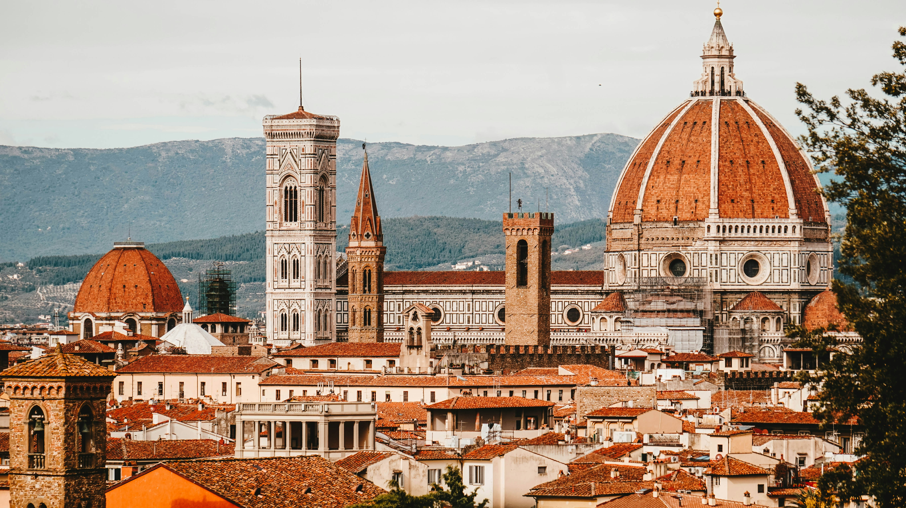

Lost in Florence: The Best Hidden Gems You Haven’t Seen Yet
Forget the Uffizi and the Duomo—Florence is full of secret courtyards, tucked-away cafés, and historic spots most tourists miss...
Read MorePasta Like a Local: The Best Carbonara I’ve Ever Had in Rome
It wasn’t in a fancy restaurant—it was a tiny trattoria where the owner greeted every guest by name. Here’s where to find the best carbonara...
Read MoreA Solo Day Trip to Venice: Is It Worth It?
I took the early morning train to Venice with no itinerary, just a camera and an appetite for adventure. Here’s how I made the most of a single day...
Read MoreThrifting in Milan: Can You Actually Find Affordable Fashion?
Milan is the fashion capital of the world, but does that mean you need a designer budget? I searched the best vintage stores and flea markets...
Read MoreGelato vs. Ice Cream: Why Italian Gelato Just Hits Different
There’s ice cream, and then there’s Italian gelato. I taste-tested my way through Florence to find out why gelato is so much creamier and richer...
Read MoreThe Amalfi Coast Bus Ride: Terrifying or Breathtaking?
Some call it scenic, others call it a near-death experience. I took the infamous bus ride along the Amalfi Coast—was it worth it? Read on...
Read More5 Italian Phrases That Will Save You in Any Situation
Forget the textbook phrases—these are the five Italian expressions that actually helped me navigate markets, restaurants, and conversations...
Read MoreLiving La Dolce Vita: What Italians Taught Me About Slowing Down
Between espresso breaks, afternoon strolls, and three-hour dinners, Italians know how to live. Here’s what I learned about embracing life...
Read MoreThe Best Cafés to Work From in Florence (With Reliable WiFi!)
Finding a café with good WiFi in Italy can feel like a quest for the Holy Grail. Here’s the ultimate list of work-friendly spots in Florence...
Read MoreWas Studying Abroad in Italy Worth It? My Honest Thoughts
Everyone talks about the dreamy parts of studying abroad in Italy—the food, the art, the travel. But what about the challenges? Here’s my take...
Read MoreAbout Me
My name's Hillary! I'm passionate about Italian language, culture, food and culture.
Popular Posts
